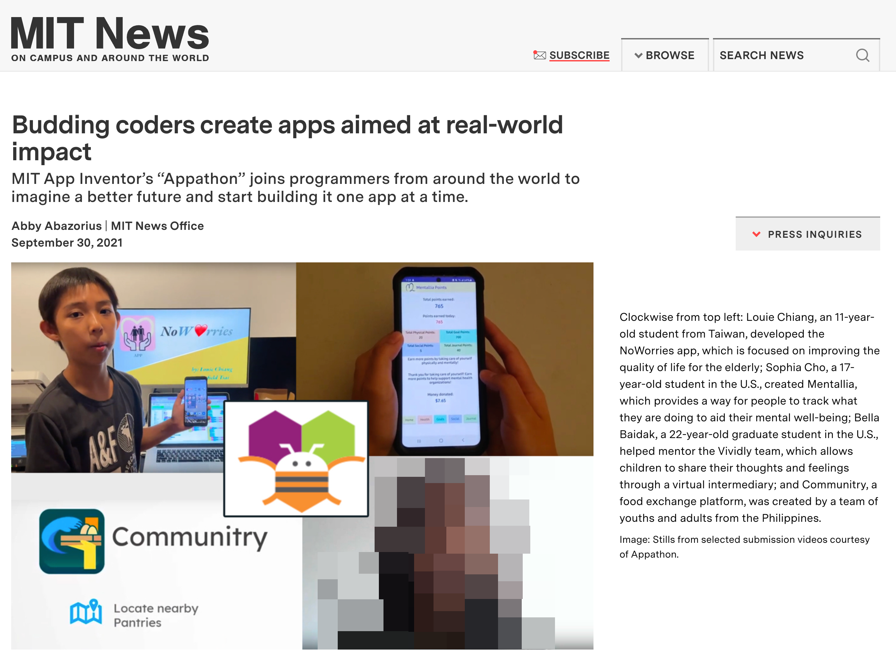

Personal Journey in STEM
- Began exploring programming and computer science in 3rd grade, initially learning Scratch, app jamming, and web programming including HTML and JavaScript in 2018.
- Progressed to using the MIT AppInventor for mobile app development in 4th grade, focusing on designing apps to solve real-life problems for personal and community benefit.
- Extended focus to social issues related to global sustainability by 6th grade, participating in domestic and international coding certifications and competitions aimed at addressing societal challenges through programming.
- Ecological footprint video project: Thinking Global, Acting Local
Achievements and Certifications
- MIT AppInventor Summer Appathon
- Finalist in Youth Individual for the GreenLife+ app
- Kang Chiao International School
- Best Project Award, 1st Place, Qing Shan Time STEM Independent Project Research
- Best Project Award, 3rd Place, Qing Shan Time STEM Independent Project Research
- National Taiwan Normal University
- Scored 245/300 PR96, Honor Roll of Distinction in the International Challenge on Informatics and Computational Thinking
- MIT AppInventor Summer Appathon
- Honorable Mentions Awards in Youth Individual for the GreenLife app
- NoWorries+ app won Global Third-Place in the Youth Team. Featured in MIT News for the app designed to stimulate memory in the elderly using family photos.
- Third-Place in the Youth Team for the NoWorries+ app 
- IEYI International Exhibition for Young Inventors
- Third-Place in the Youth Team for the NoWorries+ app
用Python分析各國經濟生產力和碳排放量的關係